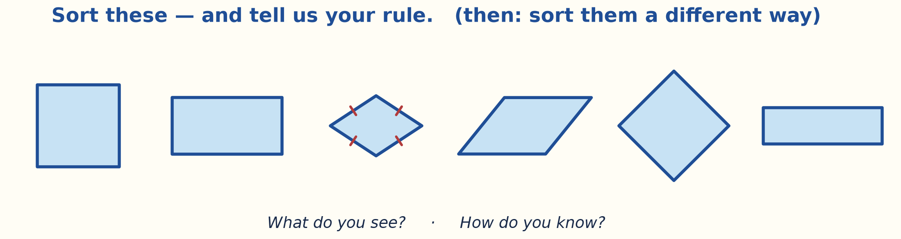

A handful of figures. Group them, then state your rule. Then sort them a different way — the second rule is where the thinking shows.

Sort these, then sort them a different way
Collect a few answers, then “How do you know?” The spread isn’t error — it’s level. Keep your own notes on what you heard; you’ll need them when we name the van Hiele levels.